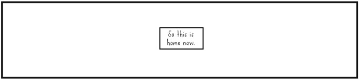

Life is Strange comic book vol. 4 (Dust #4)
It is done. I’ve read the fourth and the final issue of Life is Strange comic book, the one concluding the Dust story arc. Did Max manage to solve the mystery of parallel realities? What happened to Chloe? This is the last review of the Dust story arc (you can read all of them here). Although we know already that the comic book will have its continuation with a new story arc, the plot of the future issues remains unknown.
The cover of vol. 4 is straightforward dire. This time there are no subtleties. We can see Max crying, looking away; behind her Chloe stands turned back. There is a long fracture splitting the scene (and Max’s image) in two, on the right side a swarm of butterflies rises in some eerie blue glow. It looks like some source of light (probably the setting sun) illuminates sides of girls’ silhouettes. This time, in opposition to the cover of the first issue, Max is the one who has some ghostly quality to her. She looks like a reflection in a broken mirror, her left hand is semi-translucent and somehow, at least to me, she looks a bit less real than Chloe in the background.
This cover does not reveal subtle hints. It shows openly that the reader should be prepared for the worst
The recap pages provide some most needed context to the final part of Max’s and Chloe’s adventure. Especially the last sentence is very ominous:
Max feels like she’s becoming untethered in time and space, and whatever is happening to her is hurting more and more.
Until this moment I thought Chloe was the one in danger. After all, most of Max’s visions were from the timeline in which Chloe died in the bathroom, so I expected Chloe’s death to be the main element differentiating the timelines. But in third issue I saw a reality in which Chloe was alive, there was no storm and Rachel Amber was alive, which means it’s not all about Chloe, but rather about Max becoming unconstrained in time-space continuum (or whatever fancy term Warren would use).
Blue butterflies. Again. This time they are filling the entire page, blocking the view of a strong white light behind them. And in the next frame… Max? With her eyes closed? Okay, I really, really don’t like where this is going… It turns out that Max managed to enter the space from which she can see various flickers, a pieces of different realities, of different timelines. She can see a reality in which she and Chloe are happy together… but there is another one where Chloe and Rachel are together, and that Chloe doesn’t look any bit sadder than the one with Max.
“Chloe… did I ever ask you… what you actually wanted?”
Max wakes up in the back of Chloe’s pickup. The girls have a long and meaningful conversation about parallel universes, different realities, each of them containing a unique version of Max and Chloe. But then Max drops a bomb.
“Chloe… did you love Rachel? As more than a friend?”
“…where did that come from? How did–? I never said…”
“You didn’t have to.”
“But, Max, that doesn’t mean I don’t…”
“I know.”
“It’s just…”
“Not the same?”
“I don’t know. With everything… I’ve not even been able to think about…”
“I know. Me too. I want to, but…”
“Somewhere out there, our lives are normal and we’re not carrying a metric ton of baggage. If we were there, then…”
I’m sorry, but what the actual fuck?! So now it looks like Chloe did love Rachel, but she can’t love Max the same? So we not only do not have Pricefield, but we have some weird post-mortem Amberprice on the agenda? Okay, I know what you would say. Chloe loving Rachel doesn’t mean she doesn’t love Max, and they’ve been through so much it can be all confusing and they can’t work out their feelings just yet, etc. But it doesn’t change the fact that in my personal opinion there should be no place for Amberprice in this comic book. This is a continuation of Life is Strange, for heaven’s sake, not Before The Storm! Continuation of adventures of Max and Chloe. Max. and. Chloe. So Chloe has already forgotten how Rachel cheated on her and lied to her?
Then a flicker came to Max, showing Max’s grave, the possibility that she died in the car crash with William. It scared both girls, but Max started to realise it may mean one thing: she does not belong to this timeline. And that’s when I understood what was the symbolism behind the cover of this issue. Max said that those flickers, other realities were pulling her stronger and stronger, and it hurt her more and more. I think in that moment it became clear to Chloe that Max would leave her, would leave her timeline. Max was scared of it, too.
Maybe Max was never meant to be alive in this timeline?
It’s so hard to explain. It’s like… this reality is pushing me out. It’s like every Max that ever was is crossed over and confused in me. Like all the jumping displaced her… me… and… maybe there’s a Max who’s meant to be here… and she wants her universe back.
Max and Chloe went back to Blackwell where Chloe, rather unexpectedly, thanked Max and said her goodbyes. She already knew what Max was going to do. She knew she would lose her, and she would lose her soon. But she was ready to let Max go, because she said:
I love you too much to see you hurting, Max Caulfield.
This time it was Chloe who kissed Max goodbye
Next morning the High Seas arrived to Arcadia Bay to offer Max and Chloe their support, should the girls need it. But Max and Chloe had more important thing to do. Max took her photo from the wallet, the very photo seen in the first issue, and said to Chloe she was going to use that photo not to jump, but rather to access the transect that would allow Max to choose the right reality, the one Max should be in.
Next two frames, showing Max slowly fading away, her head rested on Chloe’s shoulder… It hurt like hell. Poor Max. Poor, brave Max… Her last dialogue with Chloe was so touching.
“I wish we could stay like this forever.”
“Somewhere out there… we do.”
And then Max was gone.
May you find your peace, Max…
Max found herself in space between realities, in space where she had to make an ultimate choice. And she did. She chose a reality to live in.
Chloe… You’re my anchor. You’ve always been my anchor. And wherever I find myself I know you’ll be there. But your whole life, you’ve had choices made for you, and I’m no less guilty. And so now I choose your choice. You get to choose, Chloe.

Max found herself on Santa Monica beach. Facing Chloe and… Rachel. When Chloe saw Max she was astonished. She did not expect Max and it appears that she hasn’t seen Max in a long time, living the dream with Rachel. So the ultimate reality Max found herself in was the one where Chloe had been happy with Rachel in Los Angeles.
Gimme your best shot, life. I’m ready for whatever you throw.
Wow. I really don’t know what to say. I definitely did not expect that ending. I expected Chloe to end up dead, or erased from the timeline, or Max rewinding herself out of existence, or something like that. This is definitely much better ending that one could hope for, in a way that Max is alive, Chloe is alive, heck, even Rachel is alive!
A new reality, a new timeline full of possibilities. A timeline where Chloe and Rachel are alive and live together.
But if this is a happy ending then why I’m so sad? Max choose the reality she thought was the best for Chloe, but had been Chloe aware of other possibilities, would she let Max choose this exact timeline, or would she rather have Max make a different choice? In this life Chloe and Rachel are together, they’ve been together for some time, and Max only now appeared again in Chloe’s life. I don’t think there is any possibility that in this reality Max and Chloe will end up together, and I definitely do not believe in Amberpricefield. So for Max it is not a happy ending, nor is it for the Chloe that was left behind in Arcadia Bay on the morning of the memorial ceremony. And if this Chloe was already happy with Rachel, does she really need Max at her side? And as a who? A fifth wheel? An awkward friend from the past?
I can’t say I’m content with this ending, although it was still better than I expected. I hoped for something different, though. I simply hoped for a happy Pricefield ending, nothing more. I just wanted Max and Chloe finally be happy together. I doubt they will be as happy in this reality as they would have been in one of the others. But maybe Max will find her strength and happiness in the sacrifice she made for Chloe.
I wish the girls that their Santa Monica dream come true.
Yay!
- Chloe is alive
- Max is alive
- Rachel is alive
- the goodbye kiss
- Max’s final words in this comic book
Nay!
- so many things left unexplained
- Max sacrificed her happiness for her idea of Chloe’s happiness
- Chloe was left alone in Arcadia Bay in the original reality
- no Pricefield
- we still don’t know what the memorial looks like
Overall summary in three words
poignant, surprising, unfulfilling